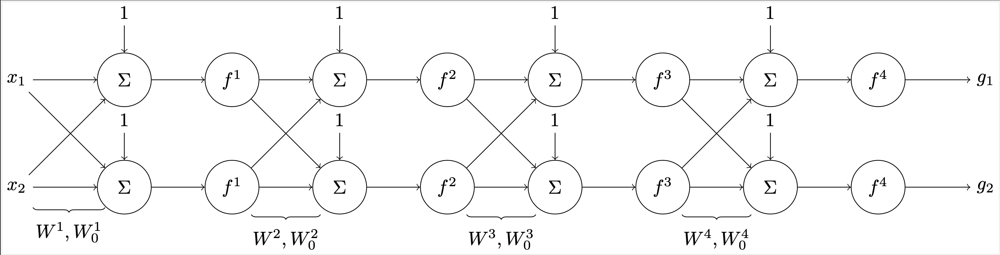
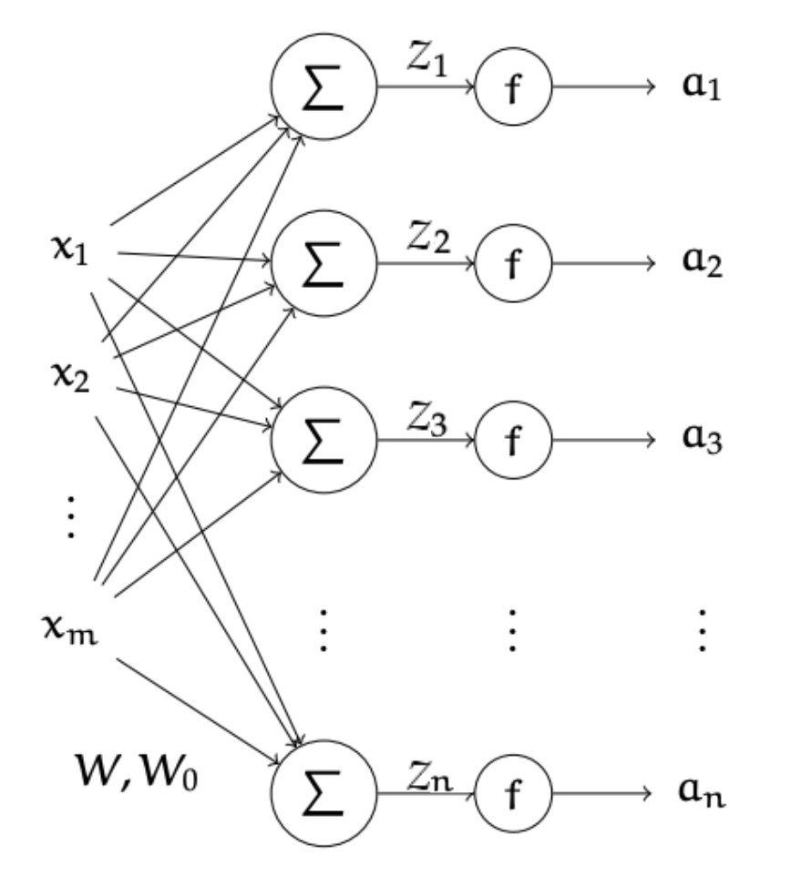
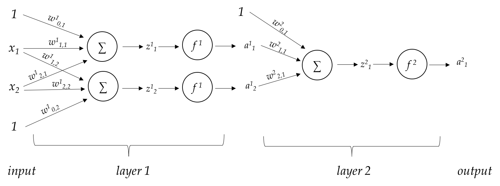

Optimization
Problem 1
Kim constructs a fully connected deep neural network with 4 layers, pictured in the figure below. He uses ReLU activation functions for all hidden layers, denoted by \(f^1,f^2,f^3\) in the figure, and an identity activation \(f(z) = z\) for the output layer, denoted by \(f^4\). The ReLU activation function is implemented as \(\text{ReLU}(z) = \max(0, z)\), with \(\partial\text{ReLU}(z) / \partial z = 1\) if \(z > 0\), and 0 otherwise.
Kim has a data set \(\mathcal{D}_\text{train} = \{ (x^{(i)}, y^{(i)}) \}_{i=1}^n,\) where each \(x^{(i)}\) is a 2-dimensional feature and \(y^{(i)}\) is a 2-dimensional label. He uses a squared-error loss function for training the neural network.

The computation of the neural network is described by the following: \(A^0 = X,~~~Z^l = W^{l^T}A^{l-1} + W_{0}^l,~~~A^l = f^l(Z^l),~~~g=A^4.\)
a) Following the above construction, Kim wants to derive the formula for back-propagation. Kim derives the gradient of the loss function with respect to weight \(W^{1}\) as:
Provide equations for the following factors in the equation above.
Hint: please check the shape of each term to make sure the matrix multiplications are valid.
Answer:
Formally, \(\frac{\partial Z^1}{\partial W^1}\) is a vector-to-matrix derivative, which produces a tensor. However, the sparse structure of the tensor allows it to collapse into a matrix \(X\). (More details can be found in the lecture notes.)
b) Kim next looks to find the gradient with respect to the offsets to the first layer, \(W_0^1.\) Write out the equation for \(\frac{\partial \mathcal{L}(g,y)}{\partial W_0^{1}},\) and identify which factors are shared with the equation for \(\frac{\partial \mathcal{L}(g,y)}{\partial W^{1}}.\)
Explanation:
Problem 2 Backpropagation
Remember, we developed a general approach to specifying an \(L\)-layer neural networks, both the forward pass that takes an input \(x\) and produces a final output, and the backward pass that computes gradients of a loss function relative to the weights. We do this by treating the network as being made up of multiple layers, each of which can be broken down into two modules:
- A linear module that implements a linear transformation: \(z_j = (\sum_{i=1}^{m} x_i w_{i,j}) + {w_0}_j\) specified by a weight matrix \(W\) and a bias vector \(W_0\). The output is \([z_1, \ldots, z_n]^T\).
- An activation module that applies an activation function to the outputs of the linear module for some activation function \(f\), such as sigmoid or ReLU in the hidden layers or softmax (see below) at the output layer. We write the output as: : \([f(z_1), \ldots, f(z_m)]^T\), although technically, for some activation functions such as softmax, each output will depend on all the \(z_i\), not just one.
We will use the following notation for quantities in a network:
- Inputs to the network are \(x_1, \ldots, x_d\).
- Number of layers is \(L\)
- The weight matrix for layer \(l\) is \(W^l\), an \(m^l \times n^l\) matrix, and the bias vector (offset) is \(W_0^l\), an \(n^l \times 1\) vector
- There are \(m^l\) inputs to layer \(l\)
- There are \(n^l = m^{l+1}\) outputs from layer \(l\)
- The outputs of the linear module for layer \(l\) are known as pre-activation values and denoted \(z^l\)
- The activation function at layer \(l\) is \(f^l(\cdot)\)
- Layer \(l\) activations are \(a^l = [f^l(z^l_1), \ldots, f^l(z^l_{n^l})]^T\)
- The output of the network is the values \(a^L = [f^L(z^L_1), \ldots, f^L(z^L_{n^L})]^T\)
- Loss function \(Loss(a, y)\) measures the loss of output values \(a\) when the target is \(y\)
Here is an illustrative picture of just a single layer for you to visualize while thinking about dimensions. Go through the above bullets and make sure you understand each set of notations and/or dimensions. Why should \(n^l = m^{l+1}\)? Given the dimensions for the input and output of a layer, can you see why \(W^l\) has the dimensions that it does?

Here is another illustrative picture that illustrates multiple layers:

Each linear module has a
forwardmethod that takes in a column vector of activations \(A\) (from the previous layer) and returns a column vector \(Z\) of pre-activations; it also stores its input or output vectors for use by other methods (e.g., for subsequent backpropagation).Each activation module has a
forwardmethod that takes in a column vector of pre-activations \(Z\) and returns a column vector \(A\) of activations; it also stores its input or output vectors for use by other methods (e.g., for subsequent backpropagation).Each linear module has a
backwardmethod that takes in a column vector \(\frac{\partial Loss}{\partial Z}\) and returns a column vector \(\frac{\partial Loss}{\partial A}\). This module also computes and stores \(\frac{\partial Loss}{\partial W}\) and $\frac{\partial Loss}{\partial W_0}$, the gradients with respect to the weights.Each activation module has a
backwardmethod that takes in a column vector \(\frac{\partial Loss}{\partial A}\) and returns a column vector \(\frac{\partial Loss}{\partial Z}\).
The backpropagation algorithm will consist of:
Calling the
forwardmethod of each module in turn, feeding the output of one module as the input to the next; starting with the input values of the network. After this pass, we have a predicted value for the final network output.Calling the
backwardmethod of each module in reverse order, using the returned value from one module as the input value of the previous one. The starting value for the backward method is \(\partial Loss(a^L, y)/\partial a^L\), where \(a^L\) is the activation of the final layer (computed during the forward pass) and \(y\) is the desired output (the label).
Linear Module
The forward method, given \(A\) from the previous layer, implements:
and stores the input \(m^l \times 1\) input \(A\) to be used by the backward method (please refer to the glossary above for the definitions of \(m^l\) and other variables).
The following questions ask for a matrix expression involving any of A, Z, dLdA, dLdZ,W and W_0.
a) The backward method, given \({\tt dLdZ} = \frac{\partial Loss}{\partial Z}\) (\(n^l \times 1\) vector), returns
\({\tt dLdA} = \frac{\partial Loss}{\partial A}\) (\(m^l \times 1\) vector), which is passed to the previous activation module in the neural network:
$ \frac{\partial Loss}{\partial A} = \frac{\partial Z}{\partial A} \frac{\partial Loss}{\partial Z}$.
Compute \(dLdA\) =
Answer: W@dLdZ.
Explanation:
For \({\tt dLdA}\) to be an \(m^l \times 1\) matrix, we have \(W\), which is \(m^l \times n^l\), and \(({\tt dLdZ})\), which is \(n^l \times 1\).
b) The backward method, given \({\tt dLdZ} = \frac{\partial Loss}{\partial Z}\), also computes \({\tt dLdW}\) (\(m^l \times n^l\) matrix) and stores it in the module instance.
\({\tt dLdW} = \frac{\partial Loss}{\partial W} = \frac{\partial Z}{\partial W} \frac{\partial Loss}{\partial Z} \).
Compute \(dLdW\) =
Answer: \(A@dLdZ^T\).
Explanation:
For \({\tt dLdW}\) to be an \(m^l \times n^l\) matrix, we have \(A\), which is \(m^l \times 1\), and \(({\tt dLdZ})^T\), which is \(1 \times n^l\).
A full explaination from LA Grace Tian Spring 2025:
Technically the gradient is a "3-dimensional object". In this special case with the linear relationship, we can also just think of the gradient as a vector. This is because it happens that we can "collapse" the gradient into a vector since many of the terms in the extra dimension have no dependence. The result for the gradient happens to be \(A\) "multiplied by" an identity matrix.
To see this, below is the written out where \(W\) is \(2 \times 2\):
Let
Then,
Then we can calculate the gradient components:
Thus, the full gradient matrix is:
'''
c) The last part of the backward method is to compute and store \({\tt dLdW0}\) (an \(n^l \times 1\) vector).
\({\tt dLdW0} = \frac{\partial Loss}{\partial W_0} = \frac{\partial Z}{\partial W_0} \frac{\partial Loss}{\partial Z}\).
Compute \(dLdW\) =
Answer: \(dLdZ\).
Explanation: Note that
We will use dLdW and dLdW0 as the gradient values in SGD.
Activation Module
Activation modules don't have any weights to update and so they are simpler.
The forward method for functions like sigmoid or tanh, given
\(Z\), return the function on the vector, component wise. Softmax
operates on the whole vector, as described in homework 4, and will need some special treatment.
The backward method, given \({\tt dLdA} = \frac{\partial Loss}{\partial A}\),
returns:
In this case, \(m^l = n^l\) and the quantities are column vectors of that size.
For softmax $ = SM(Z)$ at the output layer and assuming that we are using NLL as the \(Loss(A, Y)\) function, we have seen that there is a simple form for \({\tt dLdZ} = \frac{\partial Loss}{\partial Z}\); namely, it is the prediction error \(A - Y\). A similar result holds when using NLL with a sigmoid output activation or a quadratic loss with a linear output activation.
No question here, but please read as this information will be helpful!